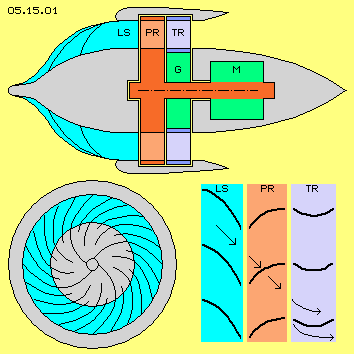
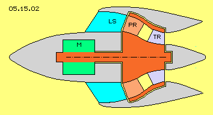
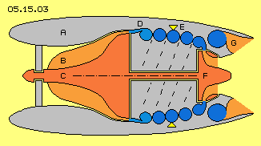
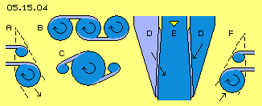

Problematik
Im Flugzeugbau besteht eine gewisse Diskrepanz: beim Design des Rumpfes und der Tragflächen wird sehr darauf geachtet, einen möglichst geringen Widerstand eines möglichst strömungs-günstigen Körpers zu erreichen. Im Gegensatz dazu sind bei den Triebwerken recht ungünstige Strömungen und Bewegungsprozesse gegeben.
Bei Propeller-Triebwerken wird z.B. die Luft im Kreis herum gewirbelt und bildet langen Wirbelzöpfen achteraus. Jedes Propeller-Blatt erzeugen per Sog eine spiralige Luftbewegung, in welches das nächste Blatt hinein schlägt. Dabei erfährt es kaum Widerstand und kann damit kaum Vortrieb erzeugen. Es wird also Energie eingesetzt für die Rotation von Luft - die völlig wirkungslos ist. Es wird Luft per Sog beschleunigt - deren kinetische Energie vollkommen verpufft.
Bei Turbinen-Triebwerken wird die Luft zwischen Rotor- und Stator-Rädern hin und her geschlagen, woraus sich keine saubere Strömung ergeben kann. Es wird vorwiegend Druck erzeugt, wobei der zwangsläufig auftretende Gegendruck viel Energie-Einsatz erfordert. Die Prozesse sind zu stark orientiert an den Abläufen bei Verbrennungsmotoren - mit deren bekannt geringem Wirkungsgrad. Hier ´verpufft´ noch mehr Energie per (nur bedingt wirksamem) Rückstoß.
Die Flugzeug-Triebwerke sind zweifellos ´high-tec´-Produkte, deren Herstellung und Wartung nur von Spezialisten gewährleistet ist. Dennoch mögen die Überlegungen eines Laien durchaus Ansätze für ein generelles Überdenken bieten.
Neues Propeller-Triebwerk
Aufgrund ihrer relativ einfachen Bauweise werden Propeller vorwiegend bei kleinen Maschinen eingesetzt. Aber auch komplexe Turbo-Props oder -Fans sind durchaus zweckdienliche und wirtschaftliche Triebwerke bei großen Maschinen. Sie sind z.B. weniger gefährdet bei Kollisionen mit Vögeln. Obige Problem sind aber bei allen Bauarten gegeben, die nur durch prinzipiell anderen Ansatz zu vermeiden sind.
In Bild 05.15.01 sind die Bauelemente einer neuen Konzeption skizziert: der Triebwerks-Körper (dunkelgrau) hat einen Vorbau, an dem Leitschaufeln (LS, hellgrau) montiert sind. Das Propellerrad (PR, rot) hat viele Schaufeln (hellrot). Es wird über die Welle (rot) durch einen Motor (M, grün) angetrieben. Ein Turbinenrad (TR, blau) hat viele Schaufeln (hellblau). Durch eine Getriebe (G, grün) dreht es etwas langsamer als die Welle und das Propellerrad. Das Bild zeigt unten links eine Sicht von vorn auf den Vorbau. Unten rechts sind Ausschnitte zu den Leit-, Propeller- und Turbinen-Schaufeln dargestellt.

Der Vorbau könnte durchaus länger sein als hier dargestellt. Die Luft wird entlang seiner Oberfläche nach außen gelenkt. Durch die spiralig gekrümmten Leitschaufeln wird die Luft in (hier von vorn gesehen) rechts-drehende Bewegung versetzt. Das ergibt sich einerseits per Druck an den konkaven Flächen, zum vorwiegenden Teil aber per Sog entlang der konvexen Flächen der Leitschaufeln. Dieser Wirbel saugt auch Luft von außerhalb an.
Die Luft kommt also bereits drehend in einer geordneten Struktur zum Einlass des Propellerrads. Durch die vielen Schaufeln wird die Rotation der Luft verstärkt. Dabei werden die Luftpartikel an der Vorderseite der Schaufeln per Druck beschleunigt, etwa zu gleichen Teilen im Drehsinn und nach hinten gerichtet. Andererseits stellen die Rückseiten der Schaufeln eine ´zurück-weichende Wand´ dar. Die Luftpartikel folgen dieser ´von sich aus´, in einer geordneten Strömung, bis zur Schallgeschwindigkeit (siehe hierzu die Pfeile unten rechts). Die eingesetzte Energie wird also transformiert in kinetischen Strömungsdruck (in diagonaler Richtung, einerseits rotierend um die Längsachse und zugleich nach achtern). Dabei wird aber die Hälfte der Luftmasse und Geschwindigkeit der Strömung per Sog generiert, d.h. ohne entsprechenden Energie-Einsatz.
An den üblichen Propellern ergibt sich als Vortrieb nur der Gegendruck, der an der Druckseite des Propellers für die Beschleunigung der Luft in achterliche Richtung wirksam wird. Der restliche, weitaus größere Anteil kinetische Energie verpufft wirkungslos. Zur Verwertung des gesamten Strömungsdrucks muss nun eine Umlenkung vollkommen nach hinten erfolgen. Zusätzlich muss die Rotation umgelenkt werden in einen Abfluss vollkommen
parallel zur Längsache.
Zusatz-Kraft
Diese Umlenkung erfolgt am Turbinenrad. Durch Druck an der konkaven Seite ergibt sich wieder eine Vortriebs-Kraft. Es ist zu beachten, dass Luft auch an der Rückseite solcher Schaufeln umgelenkt wird (siehe Pfeil unten rechts). Es findet also ein Richtungswechsel statt, wobei die Strömungsenergie an einer ortsfesten Schaufel wirkungslos verpufft. An dieser konvexen Seite wird die Strömung per Sog sogar beschleunigt. Die Druckdifferenz an beiden Seiten dieser Schaufeln ist also erhöht. Es ergibt sich ´Auftrieb´ wie an einer Tragfläche - der aber erst nutzbar wird, wenn er als Drehmoment an einem Rad wirken kann.
Allerdings sollte dieses Turbinenrad etwas langsamer drehen als das Propellerrad. Wenn beide Räder über ein Getriebe gekoppelt sind, ist ein optimaler Durchsatz an Luft gewährleistet, bei jeder Drehzahl mit gleichen Profilen.
Es mag nun unsinnig erscheinen, eine Pumpe und eine Turbine auf gleicher Welle zu installieren. Die Turbine kann nur einen Teil der eingesetzten Energie zurück gewinnen (bzw. den erforderlich Energie-Einsatz reduzieren). Gegenüber herkömmlichen Propellern wird hier jedoch tatsächlich ein Mehr-Nutzen erreicht: es wird die ansonsten ungenutzte Energie der Rotation verwertet und es wird der beachtliche Anteil der per Sog generierten Strömung in Vortrieb umgesetzt. Und nebenbei ergibt sich auch noch eine Reduzierung des erforderlichen Energie-Einsatzes.
Simple Konzeption - hoher Wirkungsgrad

In Bild 05.15.02 ist eine Variante dargestellt, die besonders geeignet ist für die Installation hinter den Tragflächen oder seitlich / über dem Heck eines Fliegers. Es sind wieder obige Elemente eingesetzt, nur etwas anders angeordnet.
Der Motor (M, grün) ist vorn im Triebwerks-Körper (grau) installiert. Auf der Welle (rot) sind nun das Propellerrad (PR, rot) und das Turbinenrad (TR, blau) installiert. Es sind wieder Leitschaufeln (LS, hellgrau) spiralig angeordnet vor dem Einlass zum Propeller. Die Propellerschaufeln (hellrot) drücken / saugen nun die Luft etwas näher zur Achse. Über einen Kanal (gelb) fließt die Luft (rotierend) weiter zu den Turbinenschaufeln (hellblau). Am kürzeren Radius bewegen sich diese langsamer im Raum, so dass nun kein Getriebe mehr erforderlich ist. Die Propeller- und die Turbinen-Schaufeln können sogar gemeinsam auf einem Rotor-Bauteil installiert sein. Die Geometrie beider Schaufeln ist relativ einfach aufeinander abzustimmen. Sie arbeiten gleichwertig zusammen bei jeder Drehzahl.
Konventionelle Propeller produzieren so viel unproduktive Verwirbelung in der Luft, dass meist nur zwei Blätter eingesetzt werden. Der mittige Teil dieser Propeller ist relativ wirkungslos. Hier werden an längerem Radius viele Schaufeln eingesetzt, die eine stets gleichförmige Strömung ergeben. Die gesamte eingesetzte Energie wird in Vorschub übertragen - plus der Energie aus der nebenbei per Sog anfallenden Strömungsenergie. Diese neue Konzeption eines Propeller-Triebwerks ist weit effektiver und wirtschaftlicher zu betreiben als die alten Anlagen (inklusiv der Turbo-Versionen).
Problematik der Düsen-Triebwerke
Der Vortrieb für Transportfahrzeuge wird zum größten Teil durch taktweise arbeitende Verbrennungsmotore erzeugt - mit dem Ergebnis, dass zwei Drittel der eingesetzten Energie wirkungslos verpufft und die Umwelt verschmutzt wird. Die Düsen-Triebwerken arbeiten mit kontinuierlicher Erzeugung von Druck und Verbrennung, was eigentlich wirtschaftlicher sein sollte. Rein theoretisch wäre aber die eingesetzte Energie erst dann komplett in Vortrieb umgesetzt, wenn hinter dem Flugzeug die Luft (bzw. die Abgase) so ruhig und kalt wäre wie zuvor. Statt dessen hinterlassen die Düsentriebwerke einen ´glühend heißen´ Strahl. Wenn vier Fünftel der Energie wirkungslos verpufft, ist das wirklich keine optimale Lösung.
Man könnte die Abgas-Temperatur absenken, z.B. durch Einspritzen von Wasser. Umweltfreundlich würde die Verbrennung wenn es gelingt, H2O aufzuspalten ´on-board´ und ´on-demand´, direkt in der Einspritz-Düse inklusive sofortiger Zündung. Generell jedoch ist die Produktion von Druck unsinnig, weil der Gegendruck im Quadrat ansteigt. Auch die Produktion von Hitze an sich ist untauglich, weil dabei die Partikel nur noch chaotischer im Raum herum schwirren.
Moderne Düsen-Triebwerke sind wahre Meisterwerke. Aber sie sind Ausdruck des Denkens, dass Luft nach hinten zu fördern ist, damit das Flugzeug vorwärts fliegt und je mehr Druck und Hitze erzeugt wird, desto mehr Vorschub wird erreicht. Zur Erklärung des Rückstoss-Prinzips wird oft Newton zitiert mit seinen ´actio = reactio´. Die Praxis ist allerdings weit entfernt von dieser 1:1-Relation. Der doppelte Vorschub erfordert z.B. den vierfachen Treibstoff-Verbrauch. Nur bei einer exakten Drehzahl wird die Luft optimal durchgesetzt, eine Abweichung von nur fünf Prozent lässt die Leistung drastisch abfallen. Düsentriebwerke sind heute praktisch in allen Passagier- und Transport-Flugzeugen eingesetzt - aber eben nur als suboptimale Lösung.
Folgender Ansatz könnte eine Alternative sein: Wirkungsvoller Vortrieb kommt nur zustande, wenn die kinetische Energie einer geordneten Strömung an möglichst großer Fläche umgelenkt wird. Primäre Zielsetzung muss also die Generierung zweckdienlicher Bewegung sein. Dabei sollte möglichst wenig Druck angewandt werden. Allein per Sog kann eine Strömung bis zur Schallgeschwindigkeit generiert werden. Die Luft sollte immer nur im gleichen Drehsinn beschleunigt werden. Es ist eine Drallströmung zu erzeugen in runden Rohren. Die Verbrennung des Treibstoffs soll diese Strömung nochmals beschleunigen. Erst am Auslass sollte die Umlenkung parallel zur Längsachse erfolgen.
Strömungs-konforme Konzeption

In Bild 05.15.03 ist diese neue Konzeption grob skizziert. Im Gehäuse (A, grau) dreht ein kegelförmiger Rotor (C, rot). An seiner Oberfläche sind spiralig diverse Leitschaufeln (B, hellrot) montiert. Sie saugen und drücken die Luft in schmale Kanäle. In diesem flachen Ring rotiert die Luft diagonal nach hinten. Sie wird tangential in Rohre (D, blau) eingeleitet. Es können vier (oder mehr) Rohre installiert sein, die spiralig um die Längsachse weiter nach hinten verlaufen. Mit diesen Rohren rotiert die Luft also um die Systemachse und zusätzlich um die Längsachse der Rohre. Es existiert also eine intensive Drallströmung.
Diese wirkt wie ein ´Rückschlag-Ventil´ für die nachfolgende Verbrennung. Dazu wird Kraftstoff zugeführt und gezündet, hier angezeigt durch gelbe Dreiecke E. Die Entwicklung von Druck und Hitze ist so zu organisieren, dass die Drallströmung beschleunigt wird. Zur Kühlung muss Luft aus anderen Kanälen beigemischt werden, wieder mit beschleunigendem Effekt. Entscheidend ist also, dass eine möglichst schnelle und geordnete Strömung erzeugt wird. Diese läuft in der kompakten und stabilen Form eines Potentialwirbels durch die Rohre.
Der Rotor erfordert nur geringen Antrieb (im Vergleich zum Kompressor herkömmlicher Triebwerke). Es muss also nur ein geringer Teil der Strömung an den Schaufeln (hellrot) eines Turbinenrads (F, rot) in Drehmoment umgewandelt werden. Die restliche Vorwärts- und Drall-Strömung muss als flächiger Strahl (G, hellrot) umgelenkt werden parallel zur Längsachse. Erst durch diese Umlenkung ergibt sich die Vortriebskraft, sowohl aus der in der Pumpe eingesetzten mechanischen Energie sowie der erzeugten Wärme-Energie, aber auch aus der Selbst-Beschleunigung per Sog und des Potential-Wirbels in den Rohren.
Fortwährend gleichsinnig Drehung

In den Grundlagen dieser Fluid-Technologie (siehe erster Teil) wurden die Bewegungsprozesse und Effekte der Potentialwirbel dargestellt (z.B. der Wirbelstürme). Es wurden dort auch ein ´Potential-Segment-Rohr´ vorgestellt, in welchem mittig die Strömung reibungsfrei fließt. In Bild 05.15.04 ist wiederum grob skizziert, wie diese Effekte hier wirkungsvoll einzusetzen sind.
Bei A wird die Luft von der Pumpe in einem ringförmigen flachen Kanal (hellblau) diagonal nach hinten gedrückt. Diese Luft muss tangential in eine ´Schnecke´ eingebracht werden, von der Spitze eines engen Rohres bis zu dessen maximalem Durchmesser (danach folgt im Drehsinn das nächste Rohr). Die Reibung der Strömung an den Wänden wirkt beschleunigend auf die mittig, schnell drehende Strömung (siehe Kapitel ´Potential-Segment-Rohre´).
Es sollten mindestens vier Rohre eingesetzt sein, deren Strömungen später zusammen geführt werden. Bei B wird die Luft aus zwei Rohren jeweils tangential über geleitet in das mittige Rohr. Die beiden abgebenden Rohre enden spitz, das aufnehmende Rohr muss entsprechend größeren Durchmesser aufweisen (siehe C).
Diese Technik ist anzuwenden zur ´Kühlung´ der Verbrennung (wie rechts daneben skizziert ist). Im mittigen Rohr wird Treibstoff zugeführt und gezündet (E, gelb markiert). Der Querschnitt muss anschließend erweitert werden. Zugleich wird hier von links und rechts kühle Luft aus den Rohren D zugeführt (wiederum tangential), die sich als flache Schicht entlang der Wand integriert. Auch hierbei ergibt sich wieder der Tornado-Effekt: die kühle Luft ist langsamer und weist einen stärkeren statischen Druck auf. Sie komprimiert und beschleunigt die mittig rotierende Strömung.
Wie bekannt ist (und in den Grundlagen dargelegt wurde) beugt sich die langsame Strömung zur schnelleren hin. Oder anders ausgedrückt: die schnellere Strömung wirkt wie ein Sog, indem sie Partikel in sich widerstandslos aufnimmt. Normalerweise ergibt die Erzeugung von Hitze ein größeres Chaos der molekularen Bewegungen. Mit diesen Maßnahmen aber ergibt sich eine konzentrierte und geordnete Strömung - und damit hohe kinetische Energie.
In diesem Bild rechts bei F ist noch einmal angezeigt, dass am Auslass des Triebwerks die Strömung tangential aus den Rohren auszuleiten ist. Wie das Holz aus einem Bleistift-Spitzer wird hier die Drallströmung ´abgeschält´. Dieser flächige Strahl muss komplett umgelenkt werden, so dass die Abgase letztlich parallel zur Längsachse abfließen. Egal welcher Druck, welche Vorwärts- und Drall-Geschwindigkeit die Strömung im Rohr aufweist, mit dieser Technik wird immer der optimale Vortrieb erreicht.
Anregung
Es ist natürlich total vermessen, wenn ein Laie hier den Fachleuten erzählt, wie man Düsen-Triebwerke zu bauen hat. Diese neue Konzeption wird niemals die Leistung üblicher Turbinen bringen (weil bewusst auf die Erzeugung hoher Drücke verzichtet wird). Sie könnte nur für begrenzte Flug-Geschwindigkeiten eingesetzt werden (weil bewusst die Beschränkung der (Selbst-) Beschleunigung unterhalb der Schallgeschwindigkeit eingehalten wird). Andererseits ist die Konstruktion viel einfacher und viel leichter zu bauen. Diese Maschine ist wirklich fluid-konform: Bewegung immer entlang gekrümmter Oberflächen, immer rotierend, auch überlagert, aber immer im gleichen Drehsinn. Sogar die notwendige Kühlung um die Brennkammer ist strömungs-optimal gelöst.
Nur durch solche geordneten Strömungen sind hohe Dichte und Geschwindigkeit wirtschaftlich zu erreichen und damit sehr viel bessere Effekte als aus dem Bewegungschaos konventioneller Triebwerke. Nur durch die letztlich scharfe Umlenkung in axiale Richtung kann die Umsetzung der kinetischen Energie in Vortriebskraft komplett erfolgen. Fachleute mögen bedenken, ob diese Maschine eine ökonomische Alternative zum derzeitigen Stand der Technik sein könnte.